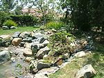

De: La Frikipedia, la enciclopedia extremadamente seria.
De: La Frikipedia, la enciclopedia extremadamente seria. De: La Frikipedia, la enciclopedia extremadamente seria.
.jpg/150px-muerto_3(2).jpg)
|
Muerto
El autor de este artículo, al parecer, se ha ido a una de sus citas al WC y suponemos que murió como el desdichado de aquí a la izquierda. Así que en su memoria, no seas cabrón, ponle más chorradas al artículo. |
| De la serie Países del planeta tierra: | |||||
| Steinburg | |||||
|---|---|---|---|---|---|
| |||||
| Lema: Muerte al sub | |||||
| Himno: Yo quiero bailar (Sonia y Selena)
| |||||
| 
| |||||
| Capital | Sanfría | ||||
| Mayor ciudad | Sanfría | ||||
| Lenguas oficiales | Ruiditos, idioma sub, Valencianglish | ||||
| Gobierno | Drogocracia | ||||
| Papichulo (Jefe de estado) | Binaka | ||||
| Área | Playa del raset, Dénia | ||||
| Población | Media docena de borrachos | ||||
| Moneda | Puñaditos de arena | ||||
| Zona horaria | GTM1/2 | ||||
| Dominio Internet | .sub | ||||
| Código telefónico | 0303456
| ||||
| ' | |||||
En país más pequeño del mundo y ubicado en la playa del raset de Dénia. También es conocido por ser el país con los peores cócteles del mundo, como las piñas coladas con grumos de coco y el calimotxo que te hace cagar negro.
Este país fue fundado durante el caluroso preuniversitarios par). En dicho conflicto se decidia la pertenencia de la Dénia. La economía del lugar se basa en la arena, uno de los componentes necesarios para crear la famosa cerveza autóctona. El conflicto se solucionó pacíficamente porque los preuniversitarios borrachos son flipados que tuvieron que ir a sus respectivas casas a dormir abrazados al último disco de Andy&Lucas.
Depués de la guerra de la arenita, un gitano-payo, que rayaba a los habitantes, queria robarnos los porros y el calimotxo que te hace cagar negro y tirarse a nuestro ministro de defensa queria convencernos de lo buena persona que es; pero realmente utilizaba una táctica de guerra psicológica con el fin de que huyéramos de la playa, pero gracias a que los habitantes son muy vagos valientes, aguantaron ferreamente hasta que desistió.
Un grupo invasor proveniente de la capital valenciana, y productora de la bebida casi no-alcohólica conocida como pometa, o Milord, envidia la tierras de los habitantes de Steinburg y su prosperidad. En País invasor es conocido como "El mundo rosa". Hace poco se descubrió que la fuente de dicha envidia era el amor que sentía su líder hacia un miembro del proletariado steingburgense, el bujero cuyo nombre queremos que permanezca en el anonimato.
El gobierno formado inmediatamente después de la guerra de la arenita mediante votaciones secretas. La ganadora fué Binaka y sus primeras medidas fué elegir la bandera y el himno nacional. Como es una guarra y muy perra el cargo le extresaba mucho, delegó sus funciones en tres ministerios:
Cuenta la leyenda que quien se acerca a ella se convierte en gay, y basandose en su maldición se creó este vídeo.
Por el momento la lista de víctimas son:
Ninja legendario con el maravilloso poder de cantar el "single de taxi". Una canción llena de poder que muy pocos son capaces de cantar, por eso es alabada por el pueblo esteinburgense.
Archivo:Preparacion traje tipico steinburg.jpg
Este país depende casi totalmente de la comida que se pueda robar de casa de los padres la importación para su sustento. Además la alimentación basica de sus habitantes se basa en el acohol, es sus más variadas formas y siempre de la manera más barata posible, y siempre respetando la Ley de Pau (citada a continuación).

|
Cuando se desee preparar una bebida con el fin de emborrachar,
nunca jamas el precio de la parte no-alcohólica debe superar al precio de la parte alcohólica |

|
| Ley de Pau |
De muy facil preparación. Sus ingredientes son el refresco de cola y el vino de tetrabrik. Para que su frescura se mantenga intacta debe comprarse a ultima hora y beberse a temperatura ambiente.
Realmente no es autoctono de esta zona, fué descubierto cuando un habitante de steinburg emigró a las tieras pijas colindantes y aprendió este cocktail; pero los ingredientes necesarios no se encontraban a su alacalze, así que tuvo que modificar la receta, consiguiendo así una bebida horrible.
Los Steinburgenses defienden a capa y espada que lo es, pero realmente no. Es una bebida a base de agua, Vozka, orina y fanta de limón. Se toma a temperatura ambiente y suele ser bastante peleona. Según la tradición sólo se debe presentar en garrafas de cinco litros y beber de ella directamente.
Bebida típica de la capital. Consiste en mezclar la sangría del comsum con cualquier bebida minimamente alcohólica con el fin de hacer más peleón el brebaje
Sucedáneo de cerveza formado por: Arena de Steinburg, agua salda, orina, un pedazo de sub, dioxido de porronio, lefa amor, y un ingrediente secreto conocido por todos los habitantes del país. Desvelarlo es considerado una traición muy grave, bajo pena de taponazo en la cara.
{{categoría:Paises]]
Autor(es):